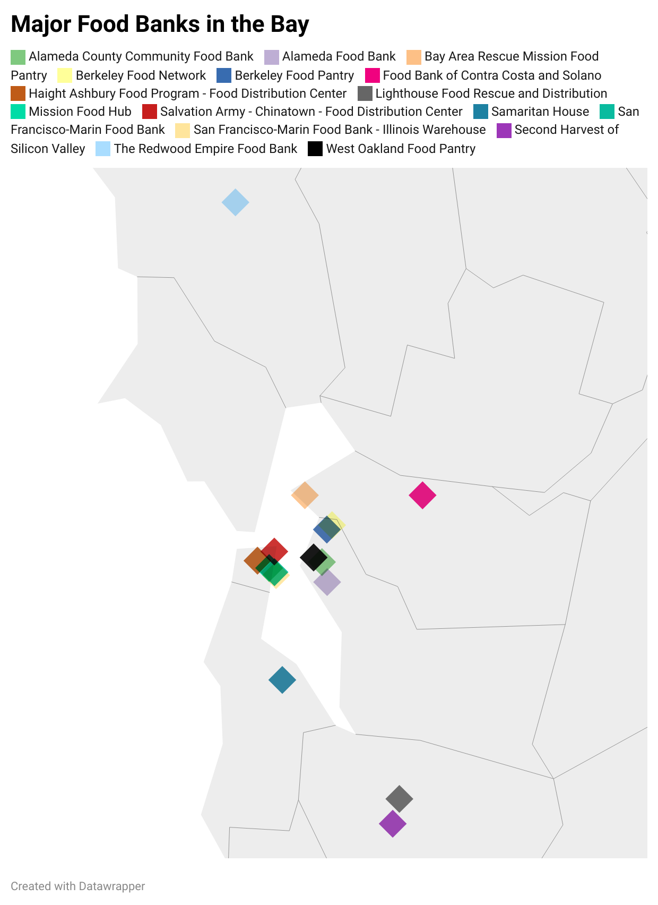
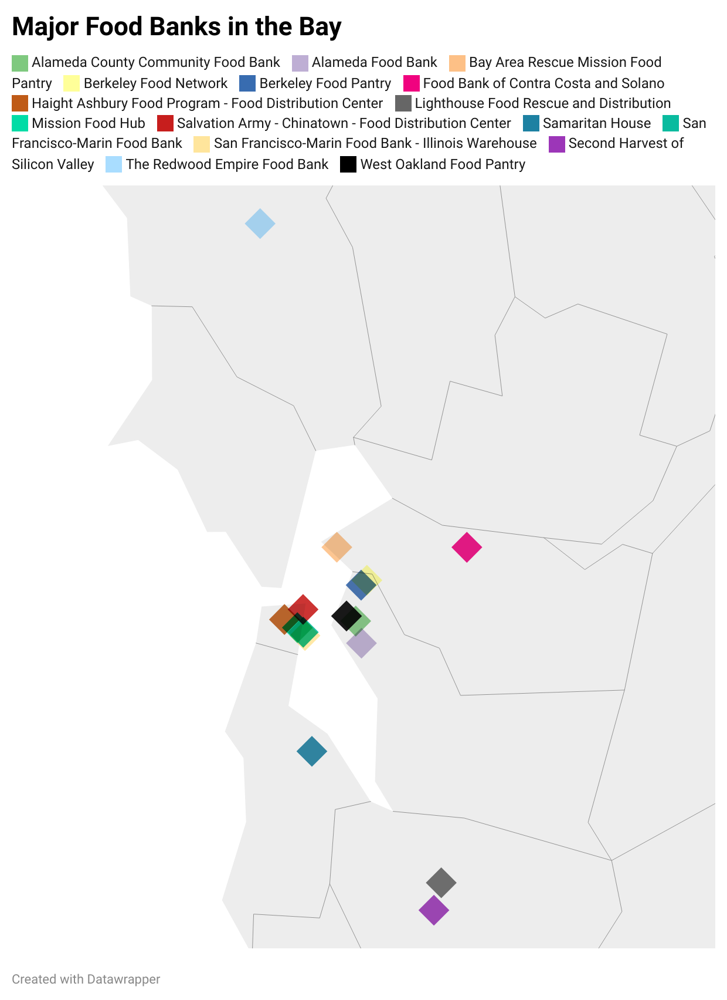

According to the California Health Interview Survey, over the past five years more than one-third of adults 18 years and older living below the federal poverty line in Alameda County haven't been able to afford enough food. Last year, around 57% of those impacted were Hispanic or Latino, nearly 40% were African American, 22% were Asian, and 20% were white. Inflation and the region's high cost of living have also contributed to the spike, intensifying food insecurity across the state, according to recent data published by the California Association of Food Banks.

About 1 in 4 households in California is food-insecure. Food insecurity permeates throughout the many counties of the Bay Area. In fact, recently the San Francisco Chronicle detailed a 65% increase in the number of residents dealing with food insecurity, with more than 870,000 people in the area food insecure—a number that is greater than San Francisco's total population. Local food banks in San Jose such as Second Harvest Food Bank are serving 500,000 people per month from all different walks of life, from workers to families and elders. The Bay Area is known for its high cost of living, including expensive housing, transportation, and other basic necessities. This often leaves residents with limited disposable income to spend on food, leading to food insecurity.

 
